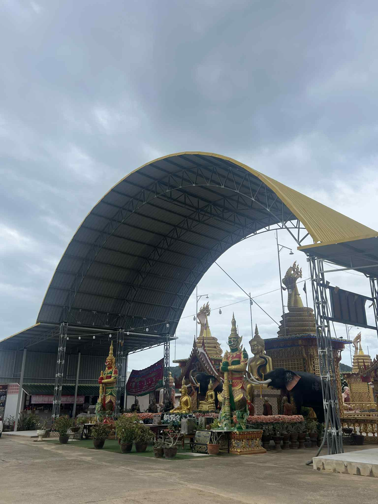

กิจกรรมและงานบุญประจำปี
วัดเขาดินจัดกิจกรรมทางศาสนาและงานบุญตามประเพณีตลอดทั้งปี เพื่อสืบทอดพระพุทธศาสนาและเป็นศูนย์รวมศรัทธาของชาวบ้านและผู้มาเยือน
1. งานทำบุญตักบาตรประจำปีและวันสำคัญทางพุทธศาสนา
ช่วงเวลา: ทุกวันสำคัญทางศาสนา (มาฆบูชา, วิสาขบูชา, อาสาฬหบูชา)
ร่วมทำบุญตักบาตร สวดมนต์ ฟังธรรมเทศนา และเวียนเทียนในช่วงเย็น เพื่อความเป็นสิริมงคลในชีวิต
ศาลาใต้ต้นโพธิ์เป็นอีกจุดสำคัญที่จัดกิจกรรมทางศาสนา

2. งานทอดกฐินและทอดผ้าป่า (ปลายปี)
ช่วงเวลา: หลังออกพรรษา (ประมาณเดือนตุลาคม - พฤศจิกายน)
งานบุญใหญ่ประจำปีที่พุทธศาสนิกชนจากทั่วสารทิศมาร่วมทอดกฐินและผ้าป่า เพื่อรวบรวมปัจจัยบำรุงพระพุทธศาสนาและพัฒนาเสนาสนะของวัด
3. กิจกรรมปฏิบัติธรรมและวิปัสสนา
ช่วงเวลา: ตามประกาศของวัด (กรุณาสอบถามโดยตรง)
วัดเขาดินจัดพื้นที่และโอกาสให้ประชาชนได้เข้ามาปฏิบัติธรรมเพื่อความสงบทางจิตใจ โดยมีพระสงฆ์คอยให้คำแนะนำในการเดินจงกรมและนั่งสมาธิ